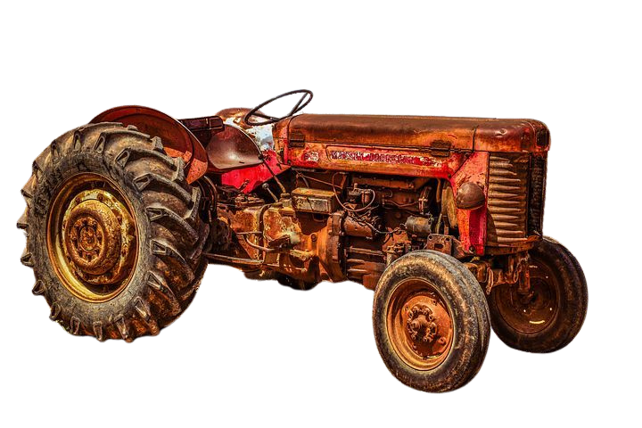

VOCÊ SABE DE ONDE VEM SEU ALIMENTO?
Conheça a união entre a força do campo e o respeito à natureza. Descubra como a tecnologia e a sustentabilidade transformam o agronegócio para garantir o amanhã.
SAIBA MAIS!

Conheça a união entre a força do campo e o respeito à natureza. Descubra como a tecnologia e a sustentabilidade transformam o agronegócio para garantir o amanhã.
SAIBA MAIS!
